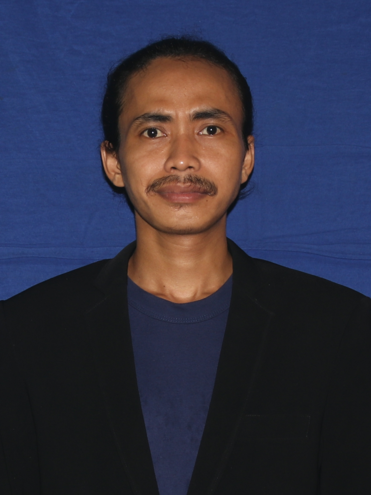

| Nama | Maulida Dzul Fikri |
|---|---|
| Tempat & Tgl. Lahir | Kudus, 10 Desember 1996 |
| Jenis Kelamin | Laki-laki |
| maulidadzulfikri@gmail.com | |
| Ponsel | +6285713645455 |
| Alamat | Jln. Ir. H. Juanda No. 19, Tangerang Selatan, Banten 15412 |
| https://linkedin.com/in/emde | |
| VCard | /maulidadzulfikri.vcf |
| QRCode |
Sebagai alumni Universitas Islam Negeri (UIN) Syarif Hidayatullah Jakarta, saya mempunyai banyak pengalaman dalam mengorganisir tim, dari tim kecil hingga tim besar. Pembelajaran seumur hidup diinternalisasikan sebagai nilai kehidupan saya.
Dengan latar belakang pendidikan saya di bidang Bahasa dan Sastra Arab, saya memahami tentang kritik sastra, terjemahan, kritik terjemahan, filologi, stilistika dan keterampilan komunikasi baik bahasa Arab maupun bahasa Indonesia.
Saya juga belajar tentang linguistik, sastra, kajian budaya, kajian Islam, isu-isu Timur Tengah dan proses pengambilan keputusan.
Sebagai orang Indonesia, saya fasih menggunakan Bahasa Indonesia dalam berbicara dan menulis serta menggunakannya untuk berbicara di depan umum. Saya mahir berbahasa Arab dalam berbicara dan menulis.
Setelah mengikuti seminar dan workshop, saya juga mempunyai kemampuan memotret dengan kamera digital secara profesional, atau saya juga bisa merekam video dengan konsep sinematik. Saya juga memahami dasar data analytics, product management, dan digital marketing.
Saya familiar dengan beberapa software, baik close source maupun close source seperti Microsoft Office, LibreOffice, OnlyOffice, GoogleDocs. Saya menggunakan sistem operasi: Debian 12 Bookworm GNU/Linux, macOS Monterey, dan Windows 7 dan 10.
| S1 | Universitas Islam Negeri Syarif Hidayatullah Jakarta (2021) |
|---|---|
| SLTA | Madarasah Aliyah Qudsiyyah Menara Kudus (2014) |
| Pesantren | Ma’had al-Maimuniyyah Langgardalem Kudus (2014) |
| IPK | 3.61 out of 4.00 |
|---|---|
| TOEFL | 450 out of 677 |
| TOAFL | 526 out of 677 |